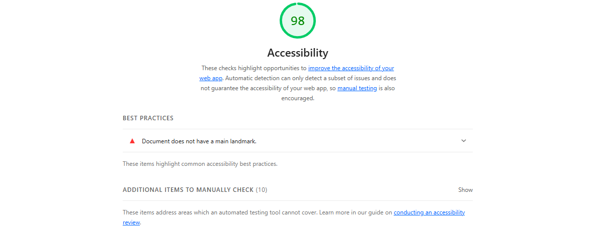
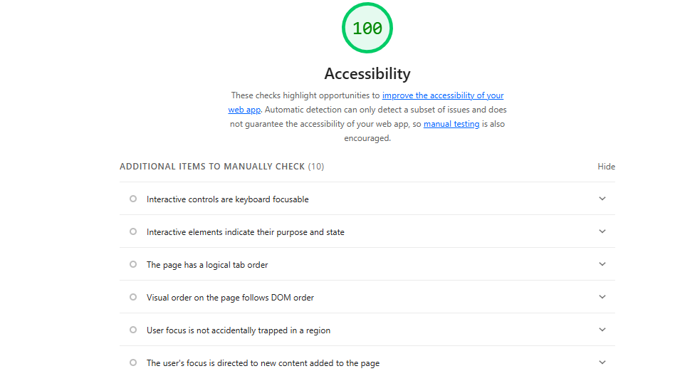

Audited target: every page in week 9-part 1/ on sumansapkota9.github.io/Suman-Sapkota/ · Lighthouse, Accessibility, desktop
Lighthouse was run on all live Week 9_1 pages. The pages that failed were fixed, re-published, and Lighthouse was re-run on the live pages.


Screenshot files not added yet: save them as lighthouse-before.png and
lighthouse-after.png in the same folder as this page (week 9-part 1/),
then write your real scores in the "Before — score" lines above.
| Page | Issue | Before | After |
|---|---|---|---|
| example-page.html | colour-contrast | 88 | 100 |
| example-page-2.html | link-name | 94 | 100 |
Example rows — replace them with your own pages and scores.
These are the four fixes that most often come up in this audit. Check each one on your pages:
#16a34a on white is only
3.29:1 — too low for normal text. Darken it to #15803d (5.02:1).
Measure contrast, don't judge it by eye.display:none is announced as an empty link by screen readers.
Use visually-hidden text instead:
.visually-hidden {
position: absolute; width: 1px; height: 1px;
overflow: hidden; clip: rect(0 0 0 0); white-space: nowrap;
}#64748b on a light background
(4.32:1) and white on #94a3b8 (2.56:1) both fail. Darken to
#475569 (6.89:1 / 7.58:1).role="img" with an aria-label) and put the explanation
in normal readable text.display:none hides content from screen readers too.